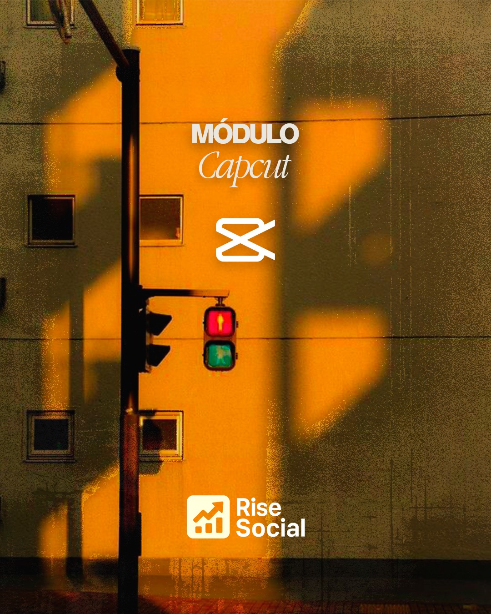
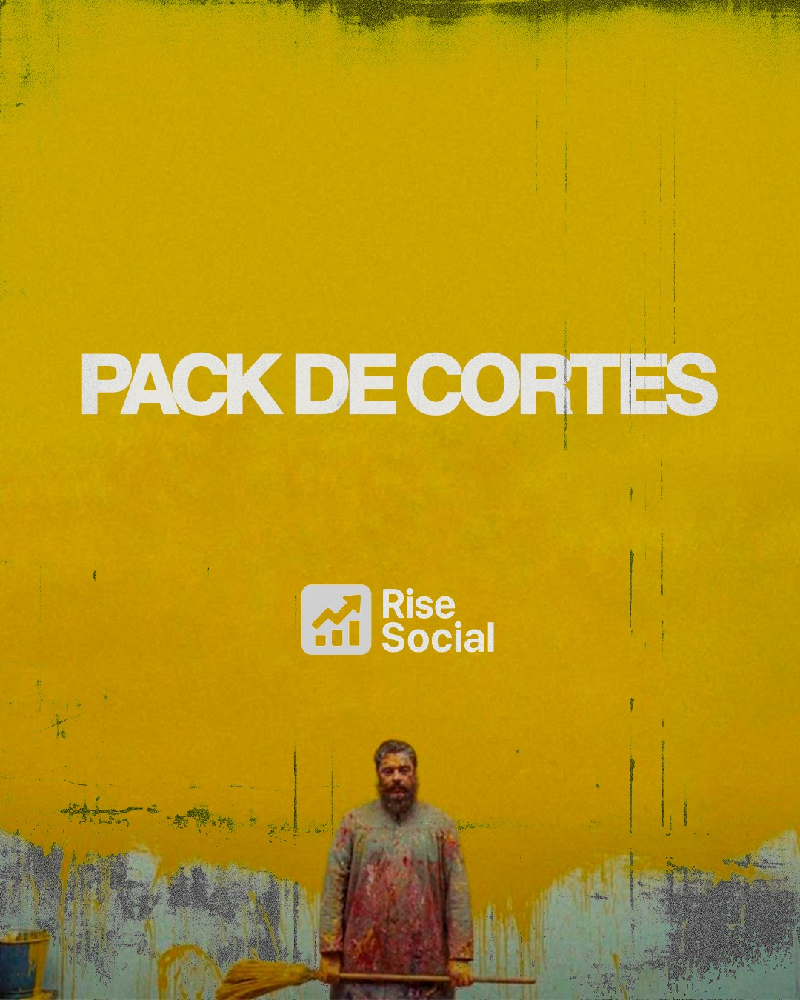
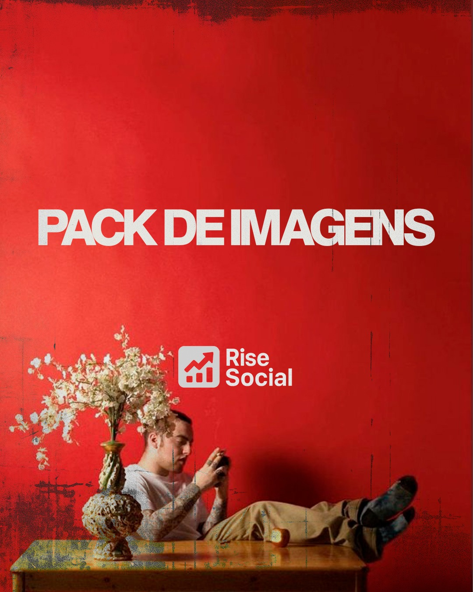
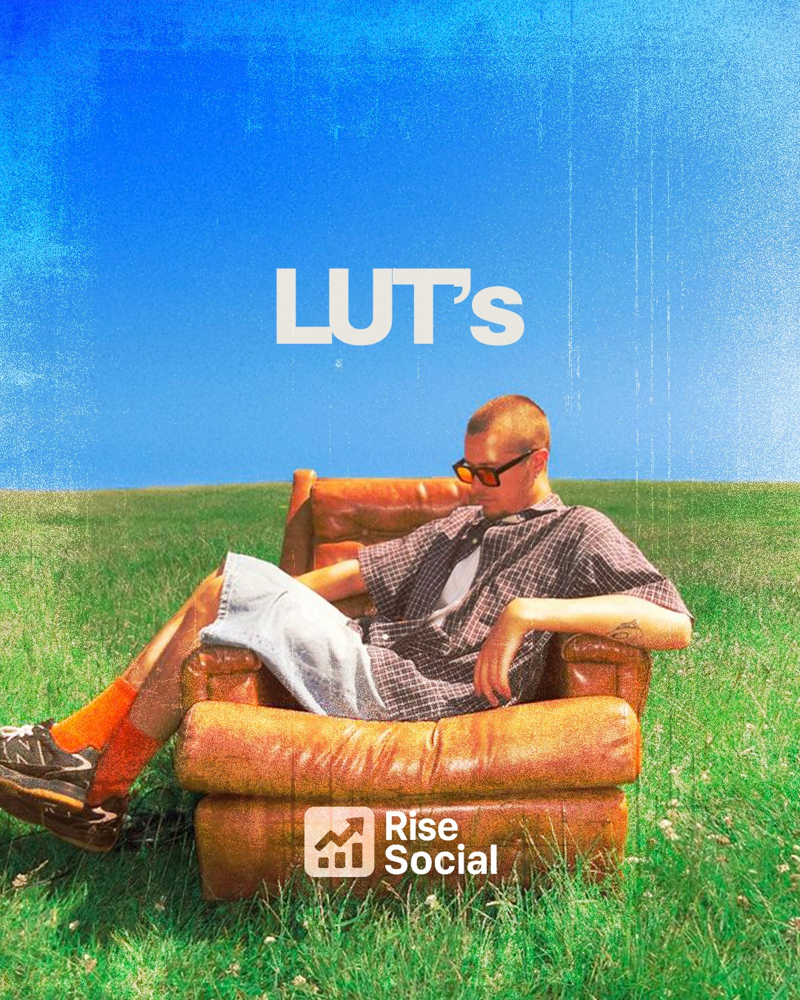
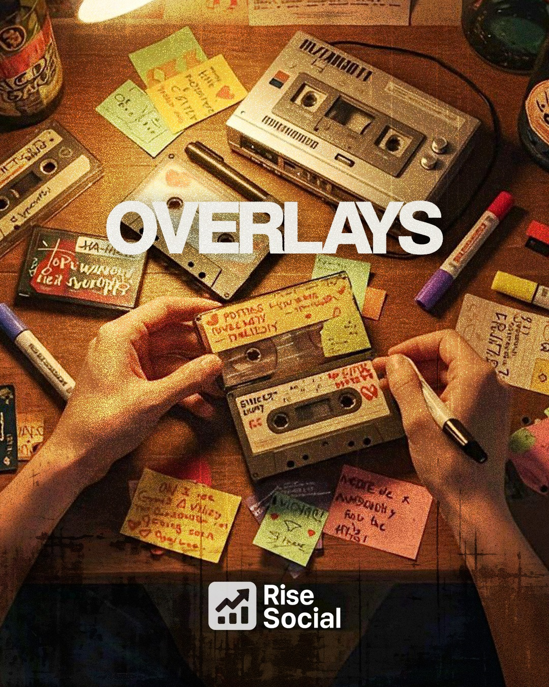
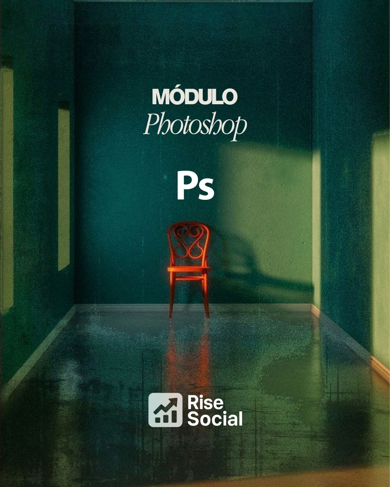
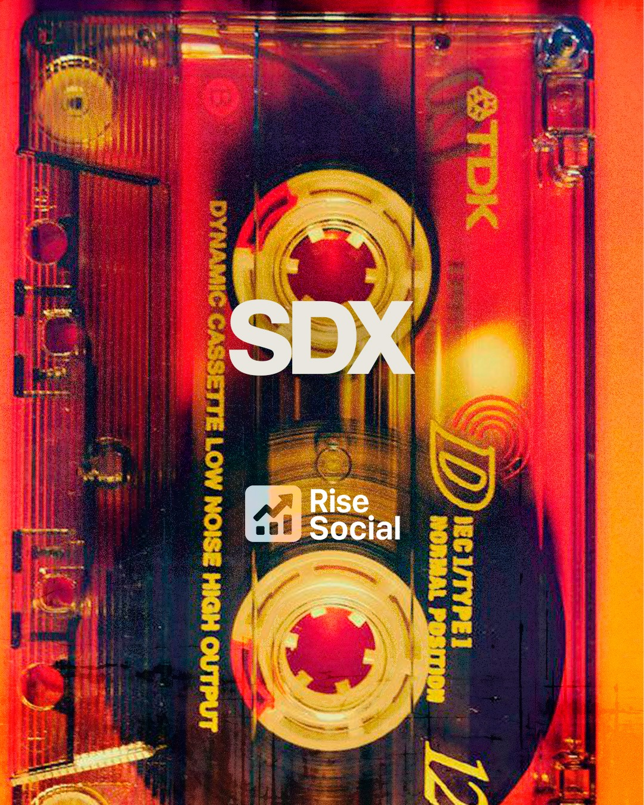
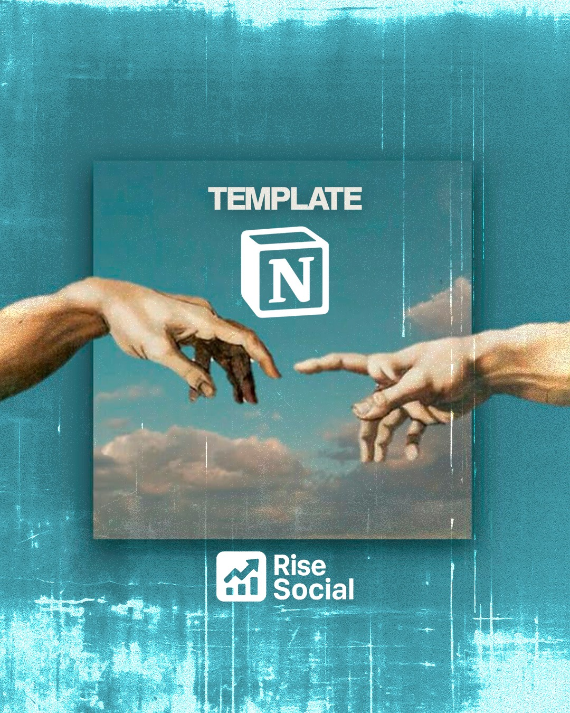
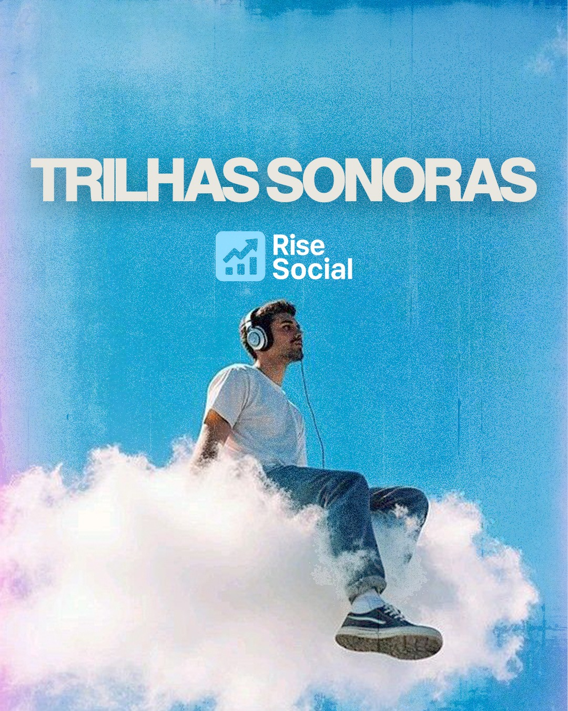

Você não sabe qual nicho escolher, como estruturar a página e que tipo de conteúdo publicar.
Rise Social
Crie sua página Dark
Acesse recursos, aulas e ferramentas para criar, desenvolver e monetizar uma página Dark mesmo começando sem aparecer e sem montar tudo do zero.
Você quer começar uma página Dark, mas ainda não tem estrutura para transformar conteúdo em monetização.
Você perde horas procurando cortes, imagens, trilhas, efeitos e elementos para montar vídeos com aparência profissional.
Você até entende que página Dark pode vender, mas não sabe como criar uma operação consistente.
Você sente falta de aulas, recursos e direção para sair do zero e criar uma página com potencial de monetização.
-Photoroom.png)
Foi para acelerar sua página Dark que nasceu o Rise.
Uma plataforma para quem quer criar conteúdo sem aparecer, organizar a produção e desenvolver uma página pronta para gerar oportunidades.
A solução
Tudo que você precisa para criar, crescer e monetizar uma página Dark reunido em um só lugar.
Conteúdo sem começar do zero
Packs de cortes, imagens, efeitos sonoros, trilhas, overlays e LUTs para montar vídeos com mais velocidade.
Criação e operação
Aulas de edição, thumbnails, organização, prospecção, vendas e automação para estruturar a página.
Monetização com direção
Estratégias e ferramentas para transformar alcance, conteúdo e audiência em oportunidades de venda.
O que você recebe para construir sua página Dark.
Packs de cortes, vídeos e imagens para criar posts e vídeos sem começar do zero.
Mais de 500 efeitos sonoros e mais de 200 trilhas para aumentar retenção e ritmo.
Mais de 50 LUTs para tratamento de cor com aparência profissional.
Aulas de Premiere, Photoshop, prospecção, vendas e automação para operar melhor.
Template no Notion, banco de IAs e estratégias para criar, organizar e monetizar.
Arsenal
completo









Aulas e orientacoes para editar videos curtos com agilidade, cortes limpos e acabamento pronto para publicar.
Biblioteca de cortes para transformar referencias e momentos fortes em videos rapidos para alimentar a pagina.
Arquivos visuais para thumbnails, posts e composicoes que deixam o conteudo mais forte e consistente.
Presets de cor para padronizar o visual dos videos e criar uma estetica mais profissional em poucos cliques.
Camadas visuais para dar textura, movimento e profundidade aos videos sem precisar criar tudo manualmente.
Direcionamento para montar thumbnails, artes e criativos com leitura clara, contraste e aparencia de pagina grande.
Efeitos sonoros para destacar cortes, transicoes e momentos importantes, deixando os videos mais dinamicos e envolventes.
Modelo de organizacao para planejar ideias, separar materiais e acompanhar a producao com mais clareza.
Musicas e atmosferas sonoras para sustentar ritmo, emocao e retencao nos videos publicados pela pagina.
Por que entrar agora
O Rise não é só um pack de arquivos. É a estrutura que tira sua página Dark do improviso. Você ganha materiais prontos, aulas e organização para publicar com velocidade, criar uma identidade mais profissional e parar de perder horas montando tudo do zero. Enquanto muita gente ainda está procurando recurso por recurso, você já pode estar produzindo, testando, crescendo e abrindo caminho para monetizar.
Criadores que usaram o Rise para acelerar páginas, canais e conteúdos Dark.
"Sem dúvidas me poupou muito tempo de trabalho, só pelos packs de efeitos sonoros e overlays já vale muito a pena. Uso diariamente."
"O melhor acervo que encontrei pra otimizar meu trabalho no Instagram. Minhas métricas de retenção triplicaram desde que comecei a usar os cortes dinâmicos."
"Comecei no mundo das páginas Dark, e a Rise tá me ajudando muito. Os packs de cortes são absurdos de completos e o curso de Photoshop salvou minhas thumbnails."
"A qualidade dos LUTs é surreal. Antes eu demorava horas no color grading, agora com 1 clique o vídeo já fica com cara de cinema profissional."
"O template do Notion mudou meu fluxo de trabalho. Consigo organizar todos os roteiros, referências e datas de postagem num lugar só."
"As trilhas sonoras não têm copyright, o que me dá uma paz enorme pra monetizar. A edição fica muito mais imersiva e profissional."
Oferta de lançamento
Desbloqueie o arsenal para criar sua página Dark.
Biblioteca de recursos, aulas práticas, templates, estratégias e ferramentas para criar conteúdo, desenvolver audiência e monetizar sua página.
R$ 198,00
R$
34,90
Acesso Vitalício
O arsenal completo para criar e monetizar uma página Dark. Pagamento único e seguro.
Acesso imediato
Garantia de 7 dias
Checkout Cakto
Quero criar minha página Dark
Perguntas Frequentes
Tudo que você precisa saber antes de criar sua página Dark com o Rise.
Porque o Rise reúne recursos, aulas e ferramentas para acelerar a criação de uma página Dark, desde a produção de conteúdo até a organização da operação.
Em vez de perder horas procurando arquivos, músicas, efeitos, imagens e materiais espalhados pela internet, você terá uma biblioteca organizada para criar conteúdos com mais velocidade e profissionalismo.
Sim. Ao adquirir o Rise, você recebe acesso vitalício à plataforma e aos conteúdos disponíveis, sem precisar pagar mensalidades.
Você poderá acessar os materiais sempre que precisar e também receberá as futuras atualizações adicionadas ao produto.
Sim. O Rise foi desenvolvido tanto para quem quer começar uma página Dark quanto para quem já cria conteúdo e quer ganhar velocidade.
Além dos recursos prontos, você terá acesso a aulas e materiais que ajudam a editar, organizar a produção e entender caminhos de prospecção, vendas e automação.
Dentro do Rise, você encontrará:
- Pack de Cortes e Vídeos;
- Pack de Imagens;
- Mais de 500 efeitos sonoros;
- Mais de 200 músicas e trilhas sonoras;
- Mais de 50 LUTs para tratamento de cores;
- Overlays, texturas e elementos visuais;
- Aulas de Adobe Premiere e Photoshop;
- Template de organização no Notion;
- Módulo de Prospecção de Clientes;
- Módulo de Vendas e Automação;
- Banco de Inteligências Artificiais;
- Conteúdos e estratégias para criação, crescimento e monetização nas redes sociais.
Após a confirmação do pagamento, os dados de acesso serão enviados para o e-mail utilizado durante a compra.
Por isso, é importante conferir se o endereço de e-mail foi preenchido corretamente no momento do pagamento.
Sim. A plataforma pode ser acessada pelo celular, computador ou tablet.
Entretanto, para baixar, organizar e utilizar os arquivos de edição, recomendamos o uso de um computador para uma melhor experiência.
Sim. O conteúdo do Rise será constantemente atualizado.
Novos recursos, arquivos, módulos e aulas poderão ser adicionados à plataforma, tornando o produto cada vez mais completo para criação e desenvolvimento da sua página, sem nenhum custo adicional para quem já possui acesso.
Sim. Você possui um prazo de garantia de 7 dias corridos após a confirmação da compra.
Durante esse período, você poderá conhecer a plataforma e analisar os conteúdos disponíveis. Caso o produto não atenda às suas expectativas, poderá solicitar o reembolso dentro do prazo da garantia.
A solicitação deve ser realizada através dos canais de suporte da Cakto ou pelo e-mail de suporte informado após a compra.
O pedido precisa ser feito dentro do prazo de 7 dias corridos. Após a aprovação, o valor será devolvido de acordo com o método de pagamento utilizado.
Sim. Todo o pagamento é processado pela Cakto, uma plataforma especializada em pagamentos digitais.
O Rise não possui acesso aos dados completos do seu cartão. As informações são processadas diretamente pelo sistema de pagamento.
Sim. Caso tenha alguma dificuldade para acessar a plataforma, baixar os materiais ou localizar os conteúdos, você poderá entrar em contato com o nosso suporte.
Nossa equipe estará disponível para orientar e ajudar na resolução do problema.
Não. O pagamento é realizado apenas uma vez.
Após a compra, você terá acesso vitalício ao Rise, aos conteúdos disponíveis e às futuras atualizações incluídas na plataforma.
Garantia de 7 dias
Acesse, explore e veja se faz sentido para sua página Dark.
Você tem 7 dias corridos após a compra para conhecer a plataforma e avaliar os conteúdos. Se entender que o Rise não é para você, basta solicitar o reembolso dentro do prazo da garantia.